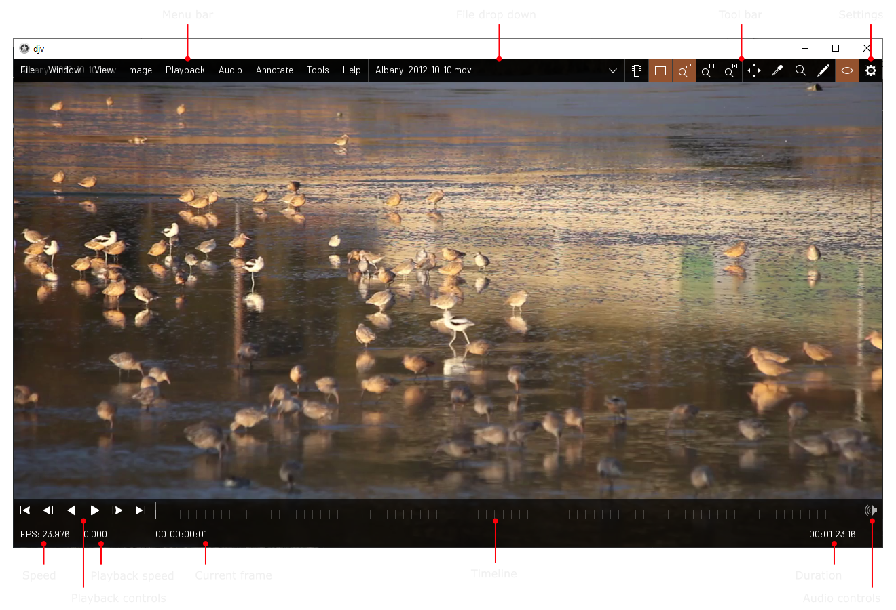
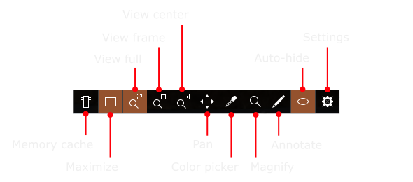
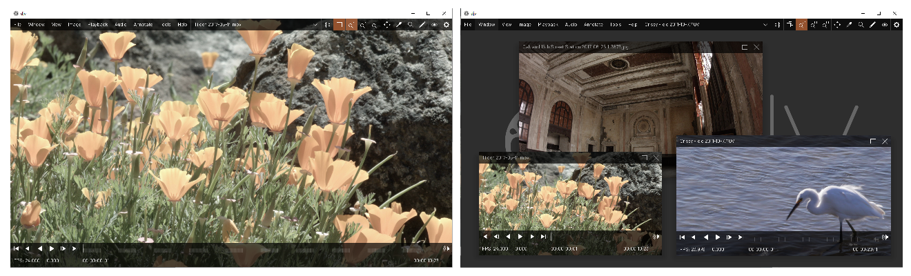

Home | Documentation | Annotations
Main Window

Tool Bar

Memory cache
The memory cache stores frames in memory for
fast playback. You can set the memory cache options from the button on the tool bar, or in the
settings dialog.
Maximize
Maximize the current window.
View full
Lock the view so the image fills the window.
View frame
Lock the view so the image fills the window
without being obscured by the user interface.
View center
Lock the view so the image is centered and the
zoom is 1:1.
Pan
Activate the pan tool. When the pan tool is
activated the left mouse button may be used to pan the image view. The middle mouse button can
also be used to pan the image view, even when the pan tool is not active.
Color Picker
Activate the color picker tool.
Magnify
Activate the magnify tool.
Annotate
Activate the annotation tool.
Auto-hide
By default the user interface will fade out if you
don't move the mouse for awhile; this allows you to concentrate on your footage without the visual
distraction of the user interface elements. If you want to turn off this feature you can use the
button on the tool bar, or change it in the settings dialog.
Settings
Open the settings dialog from the button on the
tool bar.
Maximize
You can toggle the user interface to show either
a single file at at time or all of the open files, using the "Window/Maximize" menu item, or the
"Maximize" button on the tool bar. When maximize is disabled, you can move the windows by clicking
and dragging on the title bar, or resize them by clicking and dragging the edges.
